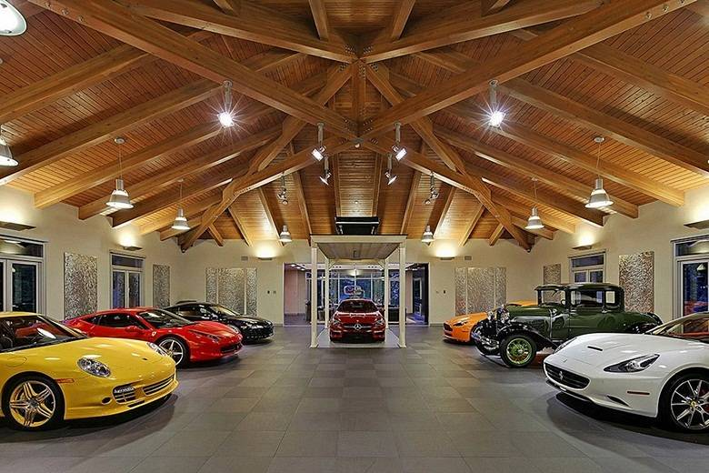

Um dia desses vi uma floresta e ela tinha dois caminhos
Você começa sua jornada na floresta clara e se encanta com sua beleza.
voce entra na floresta escura e fica com medo pois a muitas coisas feias la
voce decide morar na floresta pois ela tem muita paz

voce se depara com um enorme urso.
voce constroe sua casa la .
voce foje do urso
voce começa a fazer plantações e colheitas
voce sobe em uma arvore para sobrevivir
voce faz a platação de tomate e fica rico
voce faz a platação de milho e fica pobre

iremos compra muitas coisa
continuamos pobres e morremos de fome